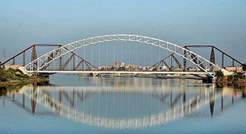

Overview
Sukkur , formerly Aror [ərōr] (Sindhi: اروڙ, Urdu: اروڑ) and Bakhar, is the 14th largest city of Pakistan and third largest city of the province of Sindh. It is situated on the west bank of Indus River and is the headquarters of Sukkur Division and Sukkur District. The word Sakhar means "superior" in Sindhi, and the spelling of the city's name in Sindhi suggests this is the origin of the name. Modern Sukkur was built by the British general Sir Charles Napier in the 1840s.
District
The district of Sukkur (whose name is derived from its headquarters Sukkur city) covers an area of 5,165 square kilometres. Geographically it is spanned from 27°05' to 28°02' north latitudes and from 68°47' to 69°43' east longitudes. The city of Sukkur is located at an altitude of 220 feet (67 m) from sea level, having terrestrial coordinates 68°52' east and 27°42' north. It is also the narrowest point of the lower Indus course.[citation needed] Sukkur district shares its northern border with Shikarpur and the recently constituted Kashmore districts. Ghotki is located on the north-eastern side while Khairpur on the south. The border with India lies further east. Sukkur is also connected by road and by air with all major cities of Pakistan.
Downtown Sukkur, Choke Ghantaghar
outer view of Holy Shrine, Sukhur

outer view of Jame'a Masjid, Bundar Road